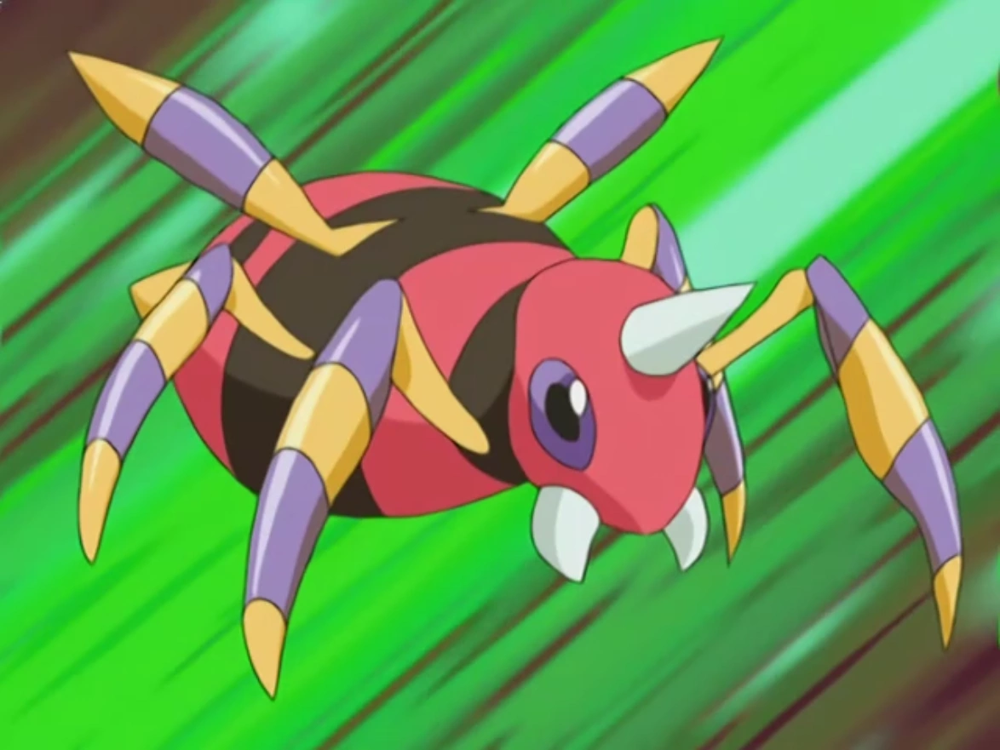
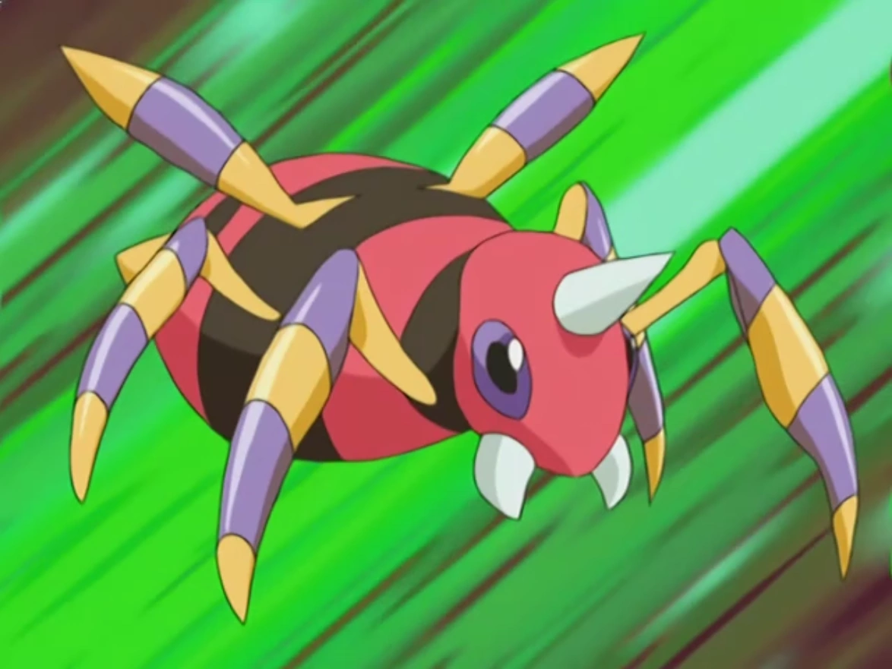
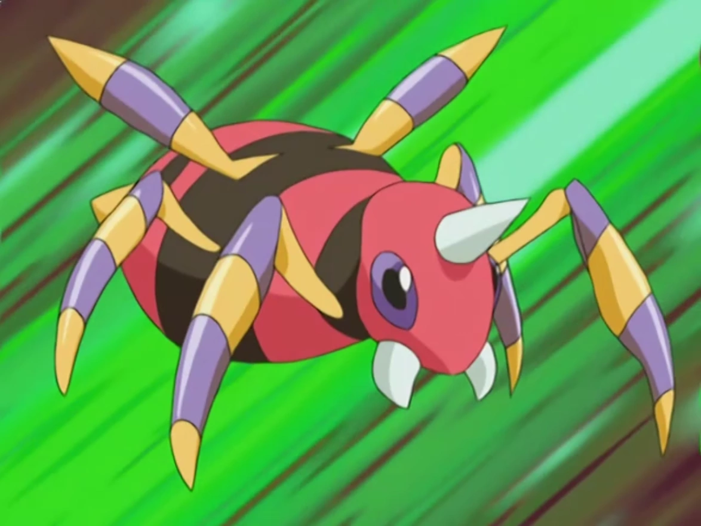

Abordando o ambiente em que habitam, essa aranha é nativa da América do Norte, mas podendo ser
encontrada em diversas outras regiões do mundo, no Brasil podemos encontrar uma maior concentração dessas
aranhas na região nordeste. Geralmente se alimentam dos insetos que ficam presos em suas
teias, porém com a falta de alimentos pode vir a se alimentar de outros membros da espécie. A digestão
dessas aranhas é extracorpórea.
A eliminação das excretas das viúvas negras se trata de glândulas coxais, sendo excretado guanina e o ácido úrico que evita o desperdício de água. As aranhas por meio de suas patas articuladas se locomovem em ambiente terrestre. Como mecanismo de defesa possuem um veneno que age diretamente no sistema nervoso, além de desenvolver náuseas, dores, espasmos musculares e alterações cardio-respiratórias.
Sanando o sistema respiratório deste animal é possível concluir que por estar inserido em um ambiente terrestre, ela possui um sistema de respiração traqueal, ou seja, com dutos dispersão por todo corpo para possibilitar a respiração. Também possui um órgão filotraqueal que desempenha a função de um pulmão. O sistema circulatório desta aranha é aberto, o coração está localizado no abdômen, bombeando sangue para todas as partes do corpo. O sangue deste animal é composto por hemocianina.
O sistema nervoso das viúvas negras é baseado em gânglios cerebrais, os nervos seguem o opistosoma central e se adentram sobre todo o corpo da aranha.
Como personagem animado, podemos citar o Pokémon Ariados:
 

A eliminação das excretas das viúvas negras se trata de glândulas coxais, sendo excretado guanina e o ácido úrico que evita o desperdício de água. As aranhas por meio de suas patas articuladas se locomovem em ambiente terrestre. Como mecanismo de defesa possuem um veneno que age diretamente no sistema nervoso, além de desenvolver náuseas, dores, espasmos musculares e alterações cardio-respiratórias.
Sanando o sistema respiratório deste animal é possível concluir que por estar inserido em um ambiente terrestre, ela possui um sistema de respiração traqueal, ou seja, com dutos dispersão por todo corpo para possibilitar a respiração. Também possui um órgão filotraqueal que desempenha a função de um pulmão. O sistema circulatório desta aranha é aberto, o coração está localizado no abdômen, bombeando sangue para todas as partes do corpo. O sangue deste animal é composto por hemocianina.
O sistema nervoso das viúvas negras é baseado em gânglios cerebrais, os nervos seguem o opistosoma central e se adentram sobre todo o corpo da aranha.
Como personagem animado, podemos citar o Pokémon Ariados:



 Próximo Animal:
Próximo Animal: